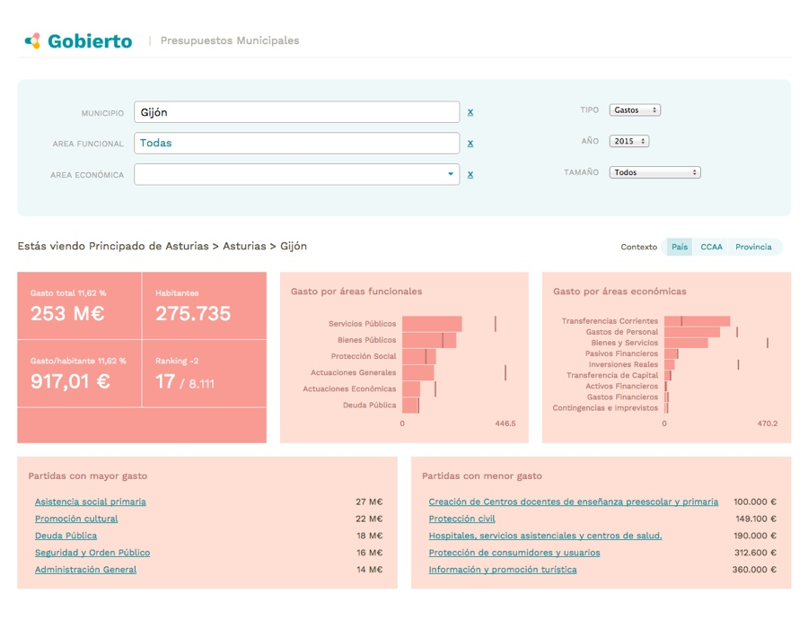

We conceptualize, design and build products for civic engagement: Tools and platforms that enable citizens and organizations to better understand and interact with the world around us.
We create our own projects and provide commercial services around data journalism, news products, open data, civic engagement.
Design
- UX
- Visual & illustration
- Data visualization
Data
- Scraping
- Processing and analysis
- Open data
Code
- Web apps
- Interactives
- Tools
Community
- Engagement
- Interaction
- Training
Products


Reasons.club
June 2015
A experiment-in-progress to explore better online discussions: Discuss with order, reach conclusions faster, take decisions.
Tasks complete product
Visit reasons.club
Projects

Fatal Extraction: Where Australian Mining Leaves its Mark / data explorer
ICIJ
July 2015
We built the interactive map and web site where you can browse details about the companies. Data was parsed from a Google Doc the editorial team was working on. Import was automated through a script.
Tasks ux, visual design, front-end, back-end, data processing

España en Cifras
El Español
May 2015
We compiled and proccessed more than 85 different datasets from different sources to provide a simple fact-sheet with key indicators about economy, demographics, employment, election results, budgets... for the +8.000 councils, provinces and spanish regions to give context for the coming elections. We also created interactive maps from the data, and tools to compare indicators from different councils or provinces. All data was indexed using Elastic Search and internal APIs were created to build new services from the data. More about the process.
Tasksux, visual design, front-end, scrapping, back-end, elastic search, ruby on rails, D3

Evicted and Abandoned / data explorer
ICIJ
July 2015
Tasksux, visual design

Earnings Inspector
Brown Institute (Columbia/Stanford)
June 2015
Tasksux, visual design

Swiss Leaks / data explorer
ICIJ
February 2015
Tasks ux, visual design